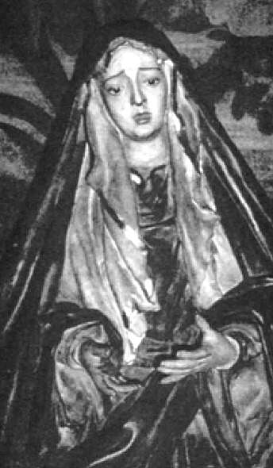

La Madruga sevillana
Esta cofradia, tiene el titulo popular como la hermandad más antigua de Sevilla,está compuesta por dos titulares pasionarios que procesionan en semana santa, Jesus de Nazaret y Virgen de la Concepcion acompañada de San Juan Evangelista
La hermandad tiene sus inicios en 1340 en la parroquia de Omnium Santorum, actual sede del Carmen Doloroso que realiza su estacion de penitencia el MIercoles Santo y de los Javieres que sale el Martes Santo.En sus principios, la hermandad solo era un grupo de penitentes que procesionaban por los alrededores del barrio de la Macarena, estos mismos salian con una tunica y un antifaz que les tapaba la cara, al igual que portaban una corona de espinas.
La actual Virgen no fue la primera titular dolorosa de la hermandad,esta misma es una replica muy parecida a la antigua talla que actualmente se encuentra en la casa del Hermano Mayor de la hermandad.
Sergio y Olivia-Robotica-3ESO-Ejercicio 2